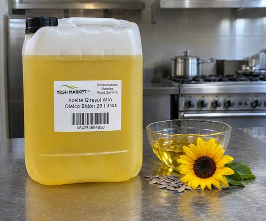

Restaurantes, taquerías y pollerías
Freído por inmersión diario: papas, pollo, empanizados, churros y tostadas. El bidón de 20 L facilita llenar y reponer freidoras de piso sin manejar decenas de botellas.
Precio publicado · Factura CFDI · Desde 1 bidón
Aceite comestible puro de girasol alto oleico para freidoras de restaurante, hoteles y cocinas industriales. Precio publicado, flete fijo y entrega el mismo día en CDMX.
$1,699 MXN por bidón de 20 L
IVA tasa 0 % · Flete CDMX $500 por pedido · Resto del país $500 por bidón o $1,600 por tarima
Pide antes de las 3:00 p. m. y te entregamos hoy en CDMX. Resto del país: al día siguiente.
Pago por SPEI, tarjeta, depósito en efectivo o efectivo al recibir en CDMX.

Venta al mayoreo
Precio publicado por bidón, flete fijo y entrega el mismo día en CDMX o al día siguiente en el resto del país. Para varias tarimas o abasto recurrente, solicita cotización.
| Presentación | Precio |
|---|---|
| Bidón de 20 L | $1,699 MXN |
| Precio por litro | $84.95 MXN |
| Tarima de 48 bidones (960 L) | $81,552 MXN |
Aceite comestible: IVA tasa 0 %. Precios vigentes hasta el 31 de diciembre de 2026. Por tratarse de un alimento, no hay devoluciones.
| Destino | Costo | Entrega |
|---|---|---|
| Ciudad de México | $500 por pedido, sin importar el número de bidones | El mismo día si pides antes de las 3:00 p. m. |
| Resto de la República, por bidón | $500 por bidón | Al día siguiente |
| Resto de la República, 5 a 47 bidones | Flete de tarima parcial: cotízalo por WhatsApp | Al día siguiente |
| Resto de la República, tarima completa | $1,600 por tarima de 48 bidones | Al día siguiente |
| Pedido | Aceite | Flete | Total |
|---|---|---|---|
| 1 bidón a la Ciudad de México | $1,699 | $500 | $2,199 |
| 10 bidones a la Ciudad de México | $16,990 | $500 | $17,490 |
| 5 bidones a otro estado | $8,495 | $2,500 | $10,995 |
| 1 tarima (48 bidones) a otro estado | $81,552 | $1,600 | $83,152 |
Número de bidones y ciudad o código postal de entrega, por WhatsApp o con el formulario.
Te enviamos el total con flete y la hora de entrega. Pide antes de las 3:00 p. m. para recibir hoy en CDMX.
Pagas por SPEI, tarjeta o depósito, o en efectivo al recibir en CDMX, recibes tu factura. En CDMX te lo lleva nuestro mensajero el mismo día; en el resto del país llega al día siguiente.
Ideal para
Lo eligen negocios que buscan específicamente aceite alto oleico para su freidora y quieren el mismo producto en cada pedido, con entrega rápida y factura.
Freído por inmersión diario: papas, pollo, empanizados, churros y tostadas. El bidón de 20 L facilita llenar y reponer freidoras de piso sin manejar decenas de botellas.
Comedores de empresa, hospitales, escuelas y centros de producción con consumo constante. Programamos entregas semanales, quincenales o mensuales.
Operaciones con varias cocinas o eventos que necesitan un insumo estandarizado y documentación técnica para su control de calidad.
Botanas, panificación y alimentos preparados. La especificación contempla su uso como ingrediente en la industria alimentaria, con perfil de ácidos grasos definido por rangos.
Compra por tarima de 48 bidones para reventa. La especificación del producto también contempla el re-envasado.
Facturamos con CFDI, emitimos cotización formal, participamos en licitaciones y enviamos la documentación para tu alta de proveedor.
Calculadora
El aceite alto oleico cuesta más por litro que un aceite vegetal común. La cuenta que importa es cuánto gastas por semana, y eso depende de cada cuánto cambias el aceite de tu freidora.
Pon los datos de tu cocina. La calculadora te dice cuánto tendría que durarte cada carga de alto oleico para que pagues lo mismo que hoy.
No es una promesa de rendimiento. En un estudio de freído, el girasol alto oleico tardó el doble que el convencional en llegar al punto de descarte, pero el resultado real depende de tu temperatura, tus alimentos y tu filtrado. No incluye reposición diaria ni flete.
Aplicaciones
Es el uso para el que más se compra en bidón. Su bajo contenido de ácido linoleico lo hace menos propenso a oxidarse que el aceite de girasol convencional. Qué esperar en freidora.
Aceite refinado y desodorizado, de color amarillo claro, con sabor y olor característicos del producto y libres de sabores extraños. También para mayonesa y aderezos: sabor neutro, no solo para freír.
Aceite líquido y transparente a 20 °C, fácil de dosificar en masas, rellenos y productos horneados.
La especificación lo prevé como ingrediente para la industria alimentaria y para re-envasado, con parámetros fisicoquímicos y perfil de ácidos grasos definidos.
¿Cuántos bidones usas al mes?
$1,699 MXN por bidón y flete fijo de $500 por pedido en CDMX. Si compras cada semana o cada mes, programamos tus entregas.
Guía técnica
Es aceite de girasol (Helianthus annuus) obtenido de variedades de semilla seleccionadas por producir un aceite con mucho ácido oleico, un ácido graso monoinsaturado (omega 9). Se extrae y refina igual que el girasol convencional; lo que cambia es la semilla.
Es una denominación con definición técnica. La norma Codex para aceites vegetales (CXS 210-1999), de la FAO y la OMS, establece que el aceite de girasol alto oleico debe contener al menos 75 % de ácido oleico sobre el total de ácidos grasos, con un rango de referencia de 75 a 90.7 %. El girasol convencional queda entre 14 y 43 %. En este producto, el valor típico de grasas monoinsaturadas, casi todas ácido oleico, es de 79 g por cada 100 g.
En el girasol convencional domina el ácido linoleico, un poliinsaturado (45.4 a 74 %). En el alto oleico la proporción se invierte: mayoría de oleico y poco linoleico. El índice de yodo lo resume: mide los dobles enlaces del aceite, y un valor menor indica un aceite menos expuesto a la oxidación.
No. En el anaquel mexicano es común el aceite oleico de cártamo (Carthamus tinctorius). Los dos son altos en ácido oleico, pero vienen de plantas distintas. Aceite Girasol Alto Oleico México es 100 % aceite de girasol.
La columna «Este producto» muestra el rango de aceptación de la especificación (70–92 % de oleico); el valor típico ronda 79 %. El perfil exacto de cada lote viene en su certificado de análisis, que te enviamos si lo pides.
| Parámetro | Girasol convencional (Codex) | Girasol alto oleico (Codex) | Este producto (especificación) |
|---|---|---|---|
| Oleico C18:1 | 14.0–43.0 % | 75–90.7 % | 70–92 % |
| Linoleico C18:2 | 45.4–74.0 % | 2.1–17 % | 2.0–20 % |
| Palmítico C16:0 | 5.0–7.6 % | 2.6–5.0 % | 3.0–5.2 % |
| Esteárico C18:0 | 2.7–6.5 % | 2.9–6.2 % | 3.0–5.0 % |
| Índice de yodo | 118–141 | 78–90 | 75–90 |
Fuente de las columnas Codex: FAO/OMS, listado de normas Codex (CXS 210-1999, Norma para aceites vegetales especificados), tablas 1 y A2 (el índice de yodo de Codex se refiere a aceite crudo).
Uso en freidora
Al freír, el aceite se degrada por el calor, el oxígeno y el agua que sueltan los alimentos. Los ácidos grasos poliinsaturados, como el linoleico, se oxidan con más facilidad que los monoinsaturados; por eso un aceite con poco linoleico suele aguantar mejor.
En un estudio de freído de churros publicado en 2025, el girasol alto oleico tardó 48 horas en superar 25 % de compuestos polares, contra 24 horas del girasol convencional. Otros estudios encuentran diferencias menores, y coinciden en que el resultado depende de cómo se opera la freidora.
Fuentes: estudio de freído de churros (2025); estabilidad en freído de aceites de girasol alto oleico (2013); comparación de girasol regular y alto oleico (2006).
![Ilustración de una freidora profesional con aceite de girasol alto oleico y una canastilla con papas]()
Ficha técnica
Datos de la especificación vigente del producto. Los valores nutrimentales son típicos y pueden variar ligeramente por lote y temporada de cosecha.
| Denominación | Aceite comestible puro de girasol alto oleico |
|---|---|
| Ingrediente | Aceite de girasol (Helianthus annuus) |
| Proceso | Refinación completa, química o física: neutralización o pretratamiento, blanqueo, desencerado, desodorización y filtración |
| Envase | Bidón de polietileno de 20 L |
| Tarima estándar | 48 bidones (960 L) |
| Alérgenos como ingrediente | Ninguno |
| Declaración OGM | No |
| Parámetro | Rango | Método |
|---|---|---|
| Ácidos grasos libres (como oleico) | < 0.10 % | AOCS Ca 5a-40 |
| Índice de peróxido (al envasar) | < 2.0 meq/kg | AOCS Cd 8b-90 |
| Humedad y materia volátil | < 0.1 % | AOCS Ca 2b-38 |
| Color Lovibond 5¼" | < 2.0 R / 20 Y | AOCS Cc 13e-92 |
| Índice de yodo | 75–90 | AOCS Cd 1c-85 |
| Índice de saponificación | 182–194 | AOCS Cd 3a-94 |
| Índice de refracción a 25 °C | 1.467–1.469 | AOCS Cc 7-25 |
| Gravedad específica a 25 °C | 0.912–0.915 g/mL | USP-NF |
| Ácido graso | Rango |
|---|---|
| Palmítico C16:0 | 3.0–5.2 % |
| Palmitoleico C16:1 | < 0.1 % |
| Esteárico C18:0 | 3.0–5.0 % |
| Oleico C18:1 | 70–92 % |
| Linoleico C18:2 | 2.0–20 % |
| Linolénico C18:3 | < 0.3 % |
| Araquídico C20:0 | < 0.3 % |
| Behénico C22:0 | < 1.0 % |
Método AOCS Ce 2-66 (cromatografía de gases).
| Contenido energético | 900 kcal (3,700 kJ) |
|---|---|
| Grasas totales | 100 g |
| Grasas saturadas | 9.0 g |
| Grasas monoinsaturadas | 79.0 g |
| Grasas poliinsaturadas | 12.0 g |
| Grasas trans | 0 mg |
| Colesterol | 0 mg |
| Proteínas, carbohidratos y sodio | 0 |
| Apariencia | Líquido transparente, libre de materia extraña a 20 °C |
|---|---|
| Color | Amarillo claro |
| Sabor y olor | Característicos del producto, libres de sabores y olores extraños |
| Temperatura | Entre 10 y 35 °C |
|---|---|
| Condiciones | Envase original bien cerrado, lugar fresco y seco, sin luz solar directa ni humedad, conforme a buenas prácticas de manufactura |
| Estiba | Sobre tarima de madera, colocar una separación de cartón |
| Vida de anaquel | Hasta 12 meses en bidón de 20 L |
| Transporte | Unidad limpia, sin olores extraños ni residuos de cargas anteriores |
¿Tu área de calidad necesita la documentación?
Pide la ficha técnica y el certificado de análisis del lote con tu pedido.
Distribución
Operamos desde la Ciudad de México. En la Ciudad de México entregamos con mensajero propio: si pides antes de las 3:00 p. m., te llega el mismo día. El flete es fijo de $500 por pedido, sin importar cuántos bidones sean. Al resto de la República entregamos al día siguiente, con flete de $500 por bidón o $1,600 por tarima completa de 48 bidones; para 5 a 47 bidones cotizamos flete de tarima parcial.
Para planear tu recepción: una tarima de 48 bidones son 960 litros, alrededor de 877 kg de aceite más el peso de envases y tarima. Al recibir, almacena entre 10 y 35 °C, lejos del sol y la humedad.
| Unidad de venta | Bidón de polietileno de 20 L |
|---|---|
| Aceite por bidón | ≈ 18.2–18.3 kg |
| Bidones por tarima | 48 |
| Litros por tarima | 960 L |
| Aceite por tarima | ≈ 877 kg (sin envases ni tarima) |
| Flete CDMX | $500 por pedido |
| Flete resto del país | $500 por bidón o $1,600 por tarima |
| Origen del despacho | Cuauhtémoc, Ciudad de México |
Pesos calculados con la gravedad específica de la especificación (0.912–0.915 g/mL a 25 °C).
Preguntas frecuentes
Es aceite de girasol obtenido de variedades de semilla (Helianthus annuus) seleccionadas por producir un aceite con mucho ácido oleico, un ácido graso monoinsaturado. La norma internacional Codex (CXS 210-1999) exige al menos 75 % de ácido oleico para llamarlo alto oleico; el girasol convencional tiene entre 14 y 43 %. En nuestro aceite, el valor típico de monoinsaturados ronda 79 %. El proceso de extracción y refinación es el mismo; lo que cambia es la semilla.
Sí. Aceite Girasol Alto Oleico México vende aceite comestible puro de girasol alto oleico al mayoreo, desde 1 bidón de 20 L hasta tarimas completas de 48 bidones, para restaurantes, cocinas industriales, food service, fabricantes de alimentos, distribuidores y compradores institucionales.
Nuestra presentación principal es el bidón de polietileno de 20 litros. Se vende por pieza o por tarima estándar de 48 bidones (960 litros).
El aceite de un bidón de 20 L pesa alrededor de 18.2 a 18.3 kg. Lo calculamos con la gravedad específica de la especificación del producto (0.912 a 0.915 g/mL a 25 °C); a eso se suma el peso del envase.
La configuración estándar es de 48 bidones por tarima: 960 litros, alrededor de 877 kg de aceite sin contar envases ni tarima.
Sí. La especificación del producto lo indica para freído, incluidas las freidoras industriales de inmersión y las freidoras de restaurante. Al tener poco ácido linoleico (2 a 20 %), es menos propenso a oxidarse que el girasol convencional, que suele tener entre 45 y 74 %. La vida útil real en freidora depende de la temperatura, el tipo de alimento, el filtrado y la reposición de aceite.
La especificación de este producto no declara un punto de humo, así que no publicamos una cifra. Para decidir cuándo cambiar el aceite de una freidora, el indicador más usado en cocinas profesionales es el porcentaje de compuestos polares totales, que se mide con un medidor portátil.
En su perfil de ácidos grasos. El alto oleico tiene mayoría de ácido oleico (monoinsaturado) y poco linoleico (poliinsaturado); el convencional es al revés. Eso se refleja en un índice de yodo menor (75 a 90 en este producto, frente a 118 a 141 del girasol convencional según Codex), que indica menos dobles enlaces y mayor estabilidad frente a la oxidación.
No. En México es común encontrar aceite oleico de cártamo (Carthamus tinctorius). Ambos son aceites altos en ácido oleico, pero vienen de plantas distintas. El que comercializamos es 100 % aceite de girasol (Helianthus annuus).
En bidón de 20 L la vida de anaquel puede alcanzar 12 meses si se respetan las buenas prácticas de almacenamiento: envase original bien cerrado, lugar fresco y seco, protegido de la luz solar y la humedad, entre 10 y 35 °C. Si se estiba sobre tarimas de madera, se recomienda colocar una separación de cartón.
Su único ingrediente es aceite de girasol y no contiene alérgenos como ingrediente. La información nutrimental típica declara 0 mg de grasas trans y 0 mg de colesterol por 100 g. La declaración de alérgenos indica que en la planta de origen se almacenan cacahuate, coco y ajonjolí, sin compartir la línea de envasado; si tu programa de alérgenos lo requiere, solicita la declaración completa.
En la Ciudad de México entregamos con mensajero propio: si pides antes de las 3:00 p. m., te llega el mismo día. El flete es fijo de $500 por pedido, sin importar cuántos bidones sean. Al resto de la República entregamos al día siguiente, con flete de $500 por bidón o $1,600 por tarima completa de 48 bidones; para 5 a 47 bidones cotizamos flete de tarima parcial.
$1,699 MXN por bidón de 20 L ($84.95 por litro); el aceite comestible tiene IVA tasa 0 %. Una tarima de 48 bidones cuesta $81,552 MXN. El flete es aparte: $500 por pedido en la Ciudad de México y, en el resto de la República, $500 por bidón o $1,600 por tarima completa. Para varias tarimas o abasto recurrente, solicita cotización.
Vendemos desde 1 bidón de 20 L. En la Ciudad de México el flete es de $500 por pedido, así que conviene juntar varios bidones en una sola entrega.
En la Ciudad de México entregamos con mensajero propio: si pides antes de las 3:00 p. m., te llega el mismo día. En el resto de la República, al día siguiente.
Aceptamos SPEI, tarjeta y depósito en efectivo. En la Ciudad de México también puedes pagar en efectivo al recibir. No manejamos crédito.
No. Por tratarse de un producto alimenticio, no aceptamos devoluciones.
Sí. Facturamos con CFDI como YESH MARKET. Si tu empresa necesita darnos de alta como proveedor, te enviamos constancia de situación fiscal, opinión de cumplimiento del SAT y carátula bancaria.
Sí. A solicitud enviamos el certificado de análisis del lote que te entregamos, la ficha técnica y las certificaciones disponibles del producto.
Sí. Para comedores industriales, hospitales, universidades y otras instituciones preparamos cotización formal por escrito y participamos en licitaciones. Envíanos las bases o el requerimiento a ventas@yeshmarket.com o por WhatsApp al 55 2589 7917.
Aceite Girasol Alto Oleico México es el nombre comercial con el que YESH MARKET, distribuidor B2B en la Ciudad de México, vende y factura este aceite. El aceite no lo producimos nosotros: lo adquirimos de su productor y lo vendemos al mayoreo, con precio publicado, entrega rápida y atención por WhatsApp.
Escríbenos por WhatsApp al 55 2589 7917 o llena el formulario de esta página con el número de bidones y la colonia o ciudad de entrega. Te enviamos el total con flete y la hora de entrega.
Pedidos
Déjanos tus datos y cuántos bidones necesitas. Te enviamos el total con flete, los datos de pago y la hora de entrega.